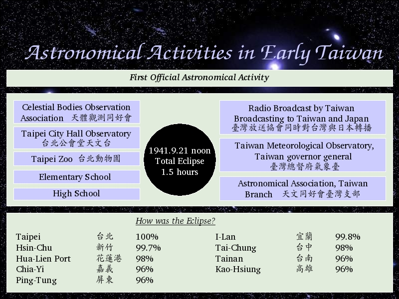

Voice Over:
Here I am going to talk about another astronomical activities in early taiwan. Eclipse.
There was an eclipse happened on 1941, September 21th, and the total period of the eclipse continued for about 1.5 hours.
This is the first official astronomical activity, many government, non-government departments join this activities.
And the government also have radio broadcast to taiwan and japan.
The company of broadcast was Taiwan Broadcasting, now it is BCC, Broadcasting Corporation of China.
How was the eclipse in each city at that time? We can see from this table.